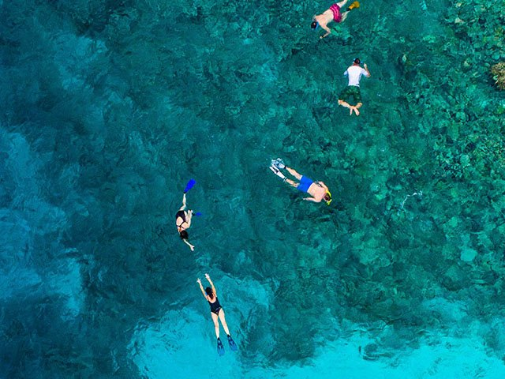
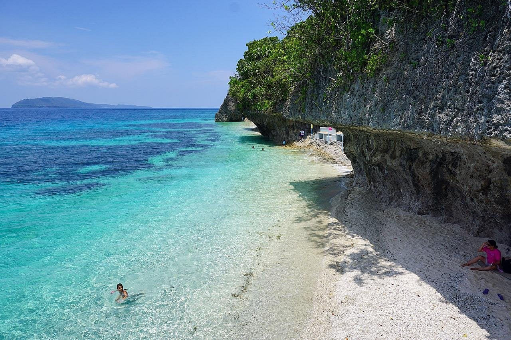

With its rich marine biodiversity and clear coastal waters, Leyte is a fantastic destination for diving and snorkeling enthusiasts. From vibrant coral reefs to diverse marine life, the province offers unforgettable underwater experiences for both beginners and experienced explorers.

Leyte’s coastal areas are home to a variety of diving and snorkeling spots that showcase the beauty of the region’s marine ecosystem. Destinations like Canigao Island and Kalanggaman Island are popular for their clear waters and healthy coral reefs, making them ideal for snorkeling and shallow dives. These locations provide excellent visibility and a chance to see colorful fish and other marine species up close.
For more experienced divers, deeper waters around Leyte offer opportunities to explore more complex marine environments. The province’s relatively less crowded dive sites allow for a more peaceful and immersive experience compared to more commercialized destinations. Whether you’re floating above coral gardens or diving deeper into the sea, Leyte offers a rewarding and refreshing underwater adventure.

Leyte’s marine areas are home to diverse fish species and coral formations.
Snorkeling is suitable for beginners, while diving offers more advanced exploration.
Snorkeling is suitable for beginners, while diving offers more advanced exploration.

